Toxicité du système respiratoire
Le poumon est à la fois la principale voie d'entrée et l'organe-cible le plus exposé en milieu de travail. Les particules se déposent selon leur diamètre aérodynamique ; les gaz pénètrent selon leur solubilité. Les atteintes vont de l'irritation aiguë au mésothéliome, en passant par les pneumoconioses fibrosantes. En mine, la silicose, le cancer du poumon (silice, DPM, As, Cr VI, Ni) et l'œdème pulmonaire retardé post-tir (NO2) sont les enjeux majeurs.
Table des matières
- Anatomie et défenses
- Mécanismes de déposition des particules
- Absorption des gaz et vapeurs
- Maladies aiguës
- Maladies chroniques
- Application terrain
- Ressources
Anatomie et défenses
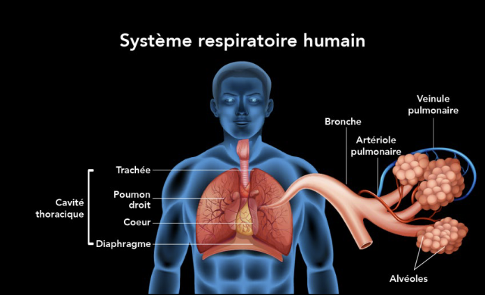
Toucher l'image pour l'agrandir| Région | Structures | Défenses |
|---|---|---|
| Voies aériennes supérieures | Fosses nasales, pharynx, larynx | Poils, mucus, cellules ciliées, éternuement |
| Trachée et bronches | Cartilages, muqueuse ciliée | Tapis mucociliaire, toux, bronchoconstriction |
| Bronchioles terminales | Sans cartilage, sans cils | Sécrétion de surfactant |
| Alvéoles (~80 m²) | Pneumocytes type I/II, paroi ~1 µm | Macrophages alvéolaires (phagocytose) |
| Plèvre | 2 feuillets (viscéral et pariétal) | Espace pleural |
Les voies supérieures filtrent et conditionnent l'air. Le nez retient les grosses particules.
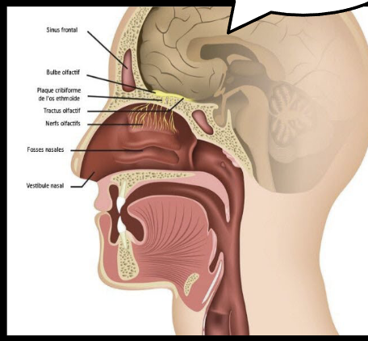
Toucher l'image pour l'agrandir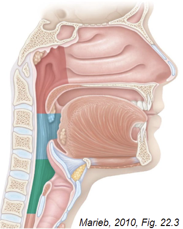
Toucher l'image pour l'agrandirL'escalier muco-ciliaire ramène vers le pharynx les particules captées dans le mucus des bronches.
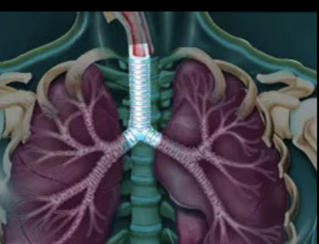
Toucher l'image pour l'agrandir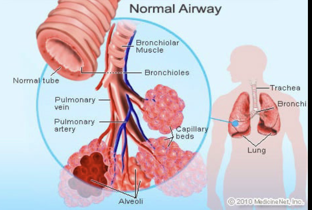
Toucher l'image pour l'agrandirAu niveau alvéolaire, les pneumocytes de type I assurent les échanges gazeux et les macrophages éliminent les particules profondes.
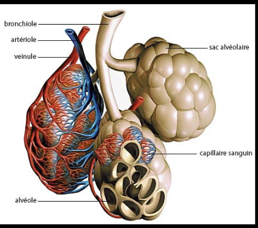
Toucher l'image pour l'agrandir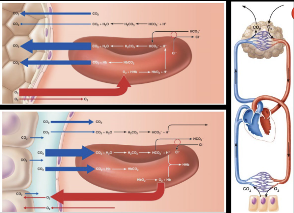
Toucher l'image pour l'agrandirLa plèvre, avec ses deux feuillets et l'espace pleural, est la cible spécifique de l'Amiante (mésothéliome).
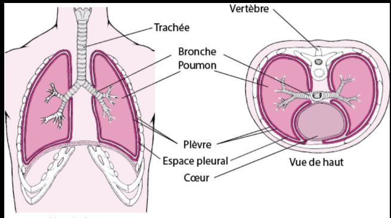
Toucher l'image pour l'agrandirVoir ADME, cheminement des contaminants dans l'organisme pour l'absorption générale.
Mécanismes de déposition des particules
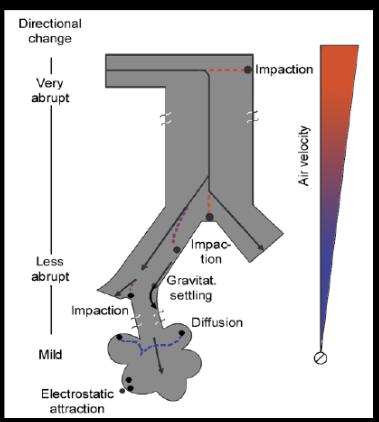
Toucher l'image pour l'agrandir| Mécanisme | Région | Taille typique |
|---|---|---|
| Impaction inertielle | Nez, grosses bronches | > 10 µm |
| Sédimentation gravitationnelle | Bronches moyennes/petites | 1-10 µm |
| Diffusion brownienne | Bronchioles, alvéoles | < 0,5 µm (et Nanoparticules) |
| Interception | Fibres allongées | Diamètre fin, longueur grande |
| Électrostatique | Variable | Particules chargées |
Fractions ISO/ACGIH
- Inhalable : passe le nez (~100 µm et moins).
- Thoracique : passe le larynx (~25 µm).
- Respirable : atteint l'alvéole (~5 µm, médian).
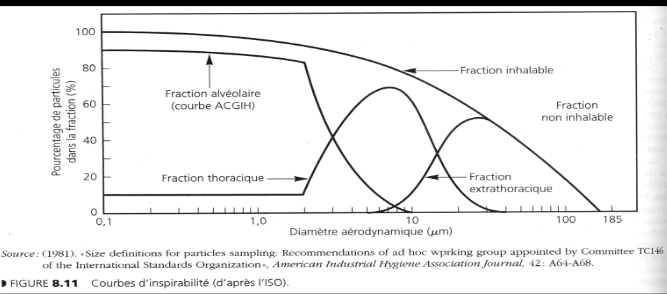
Toucher l'image pour l'agrandir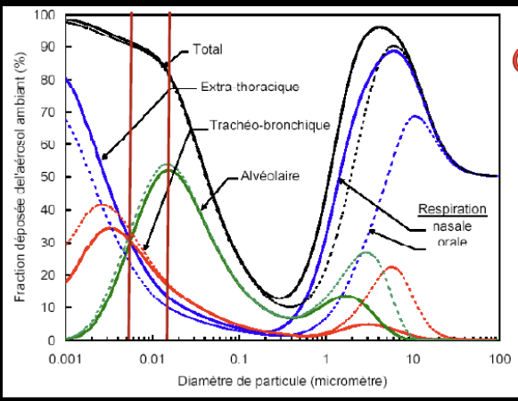
Toucher l'image pour l'agrandirL'effort augmente le débit ventilatoire et le passage en respiration buccale, ce qui amplifie la pénétration profonde et le débit sanguin.
Cas des nanoparticules : déposition principalement par diffusion ; surface spécifique élevée gouverne la toxicité (voir Nanoparticules).
Absorption des gaz et vapeurs
| Solubilité H2O | Site d'absorption / d'effet | Exemples |
|---|---|---|
| Très hydrosoluble | Voies sup. (mucus nasal) | NH3, HCl, SO2, formaldéhyde, Solvants |
| Modérée | Trachée, bronches | Cl2, ozone |
| Liposoluble / peu soluble | Alvéoles, circulation sanguine | CO, Solvants, Asphyxiants simples et chimiques |
Voir Gaz et vapeurs pour la mesure.
Maladies aiguës
| Pathologie | Mécanisme / agents typiques |
|---|---|
| Irritation des voies sup. | Cl2, NH3, formaldéhyde, vapeurs acides |
| Bronchospasme | Irritants, Sensibilisants respiratoires et cutanés (voir Sensibilisants respiratoires et cutanés) |
| Œdème pulmonaire (lésionnel) | NO2 (post-sautage), phosgène, ozone (effet retardé 4-24 h) |
| Fièvre des fondeurs (zinc, MgO) | Fumées d'oxydes métalliques. Frissons, fièvre 4-12 h après exposition |
| Bronchiolite oblitérante | NO2, diacétyle (popcorn lung) |
| Asphyxie | Asphyxiants simples et chimiques |
Maladies chroniques
Pneumoconioses (fibrose par inhalation de poussières)
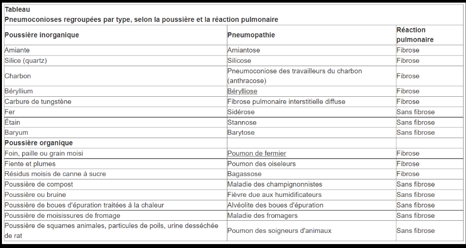
Toucher l'image pour l'agrandir| Pneumoconiose | Agent | Particularité |
|---|---|---|
| Silicose | Quartz (silice cristalline) | Latence 10-30 ans, irréversible, prédispose à la tuberculose (silicotuberculose), cancer poumon CIRC 1. VEMP Qc 0,025 mg/m³ |
| Amiantose | Amiante | Fibrose interstitielle, latence longue |
| Bérylliose | Béryllium | Granulomateuse, mécanisme immunologique (CD4) ; sensibilisation cutanée possible |
| Sidérose | Fer (soudage) | Pneumoconiose bénigne sans fibrose |
| Anthracose / pneumoconiose des houilleurs | Charbon | Macules charbonneuses, fibrose massive progressive possible |
| Talcose | Talc fibreux (avec amiante ou silice) | C1 si > 0,1 % amiante/silice |
| Stannose, barytose | Étain, baryum | Pneumoconioses inertes (radio-opaques) |
Asthme professionnel
Voir Sensibilisants respiratoires et cutanés.
MPOC professionnelle
Exposition chronique à poussières, fumées, vapeurs irritantes (cadmium, fumées de soudage, charbon).
Cancer du poumon
Amiante, silice, As, Cr (VI), Ni, Cd, fumées diesel, radon, HAP. Voir Mutagénicité et cancérogénicité.
Mésothéliome
Cancer de la plèvre (ou péritoine) quasi spécifique de l'amiante. Latence 15-40 ans. Voir Amiante.
Granulomes
Bérylliose, sarcoïdose-like (cobalt, métaux durs).
Application terrain
Le poumon est la cible n°1 en mine, parce qu'il accumule plusieurs agressions
| Source minière | Mécanisme | Maladie associée |
|---|---|---|
| Forage à sec, concassage, sablage | Inhalation silice respirable | Silicose, cancer poumon (silice CIRC 1) |
| Sautage récent (NOx) | Œdème pulmonaire retardé | Détresse respiratoire 4-24 h post-tir |
| Engins diesel souterrains | DPM, NO2, CO | Cancer poumon (DPM CIRC 1), bronchite chronique |
| Mines profondes en granite, uranifères | Radon (gaz) et descendants | Cancer poumon (radon CIRC 1) |
| Soudage en atelier | Fumées Fe, Mn, Cr (VI), Ni | Sidérose (bénigne), cancer (Cr VI, Ni) |
| Bâtiments anciens, garnitures de frein | Fibres d'amiante | Amiantose, mésothéliome |
| Atelier mécanique (huiles usées) | HAP | Cancer poumon, peau, vessie |
| Béton projeté (shotcrete) | Ciment alcalin + Cr (VI) | Irritation, sensibilisation, cancer |
L'effort physique des foreurs et des aides-foreurs augmente le débit ventilatoire et amplifie la dose absorbée. La ventilation souterraine est l'outil de contrôle principal ; en complément, forage humide, cabines pressurisées et Protection respiratoire (APR) (P100, demi-masque ou cagoule motorisée).
Le délai de réentrée post-tir (typiquement 30 min, à valider par mesure) protège contre l'œdème pulmonaire retardé au NO2.
Ressources
| Document | Type | Source |
|---|---|---|
| RSST annexe I (VEMP fraction respirable) | Règlement | LégisQuébec |
| Guides T-06 stratégie d'échantillonnage | Guide | IRSST |
| Programme de surveillance médicale silicose | Programme | Médecin désigné CNESST, rôles et pouvoirs |
| Étude APSM sur la silicose en mines du Québec | Rapport | APSM |
Articles wiki connexes
Pages qui pointent ici (25)
- 🎯 Démarrage rapide, conseiller SST Toxicologie
- 🎯 Démarrage rapide, superviseur Toxicologie
- 🏠 Wiki Toxicologie, mines Toxicologie
- ADME, cheminement des contaminants dans l'organisme Toxicologie
- Aérosols Hygiène industrielle
- Amiante Hygiène industrielle
- Amiante Toxicologie
- Amiante Toxicologie
- Asphyxiants simples et chimiques Hygiène industrielle
- Asphyxiants simples et chimiques Toxicologie
- Aspiration et dangers biologiques Hygiène industrielle
- Aspiration et dangers biologiques Toxicologie
- Gestion des moteurs diesel sous terre Toxicologie
- Introduction à la toxicologie industrielle Toxicologie
- Métaux toxiques en milieu de travail Hygiène industrielle
- Métaux toxiques en milieu de travail Toxicologie
- Mutagénicité et cancérogénicité Toxicologie
- Nanoparticules Toxicologie
- Programme de prévention silice cristalline Hygiène industrielle
- Programme de prévention silice cristalline Toxicologie
- Sensibilisants respiratoires et cutanés Toxicologie
- Solvants organiques Hygiène industrielle
- Solvants organiques Toxicologie
- Toxicité par organe Toxicologie
- Toxicologie clinique Toxicologie